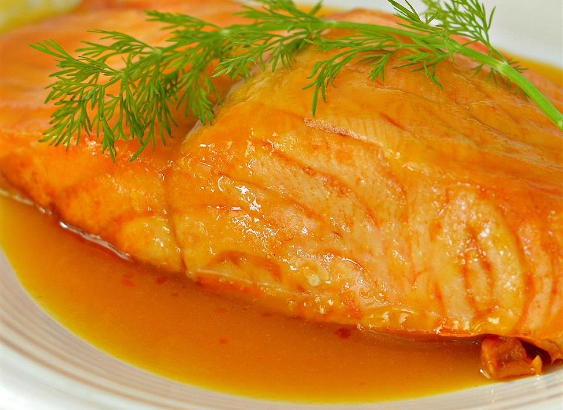

Citrus Sauced Salmon★
 4 servings
4 servings 15 minutes
15 minutes-
 Sara Fleck
Sara Fleck
 Meat
Meat
Easy way to prepare delicious salmon

| 4 | fresh salmon steaks, 3/4 in. thick | |
| 1 tbsp | cornstarch | |
| 3/4 cup | chicken broth | |
| 1/2 cup | frozen orange juice concentrate, thawed | |
| 1 tbsp | white wine vinegar | |
| Dash of ground red or black pepper, if you prefer |
| Ingredients for additional salad, if desired | | | | |-|-|-| | 4 cups | shredded spinach or romaine lettuce | | 1 | small cucumber, thinly sliced | | 1 | small red onion cut into thin wedges | |
Thaw salmon if frozen, rinse, and pat dry
Lightly coat unheated rack of broiler pan with cooking spray
Place salmon on rack
Broil 4-5 in. away from heat for 8-12min. or until fish flakes easily when tested with a fork
Meanwhile, for sauce, in a small saucepan combine cornstarch and ground red pepper
Gradually stir in broth, thawed concentrate, and vinegar
Cook and stir until thickened and bubbly
Cook and stir over med. heat for 2 min. or more
Remove sauce from heat
If desired, toss together spinach, cucumber, onion, 1/4 cup of the orange sauce and divide between 4 plates